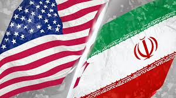

Guerra en Oriente Medio

Fecha: 11 de abril de 2026
La situación en Oriente Medio continúa siendo tensa debido a las crecientes fricciones entre Israel e Irán. En los últimos días, se han registrado movimientos estratégicos que preocupan a la comunidad internacional.
Expertos en geopolítica advierten que cualquier escalada podría tener consecuencias globales.
Por el momento, los organismos internacionales intentan mediar para evitar un conflicto mayor.